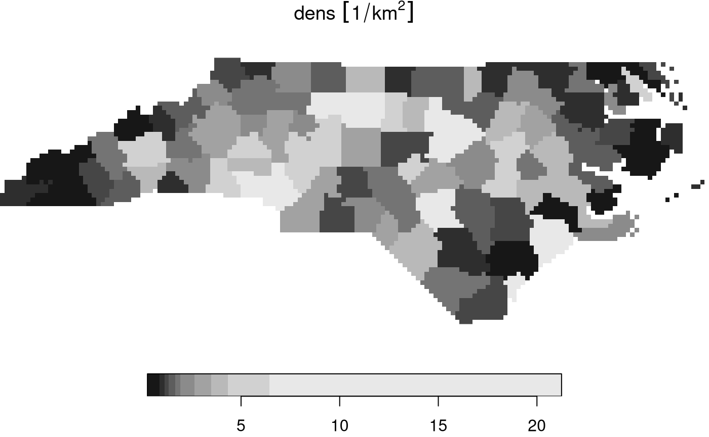

5. vector-raster conversions, reprojection, warping
Edzer Pebesma
Source:vignettes/stars5.Rmd
stars5.RmdThis vignette shows how stars object can be moved from
vector and raster representations.
Rasterizing an sf vector object
library(stars)
## Loading required package: abind
system.file("gpkg/nc.gpkg", package = "sf") %>%
read_sf() %>%
st_transform(32119) -> nc
nc$dens = nc$BIR79 / units::set_units(st_area(nc), km^2)
(nc.st = st_rasterize(nc["dens"], dx = 5000, dy = 5000))
## stars object with 2 dimensions and 1 attribute
## attribute(s):
## Min. 1st Qu. Median Mean 3rd Qu.
## file27bf1d2181be [1/km^2] 0.2545072 1.225631 1.932222 3.345918 3.825745
## Max. NA's
## file27bf1d2181be [1/km^2] 21.24828 4808
## dimension(s):
## from to offset delta refsys point x/y
## x 1 162 123829 5000 NAD83 / North Carolina FALSE [x]
## y 1 61 318260 -5000 NAD83 / North Carolina FALSE [y]
plot(nc.st)
The algorithm used is the GDAL rasterize utility, all
options of this utility can be passed to st_rasterize. The
geometry of the final raster can be controlled by passing a target
bounding box and either the raster dimensions nx and
ny, or pixel size by the dx and
dy parameters.
Vectorizing a raster object to an sf object
stars objects can be converted into an sf
object using st_as_sf. It has a number of options,
depending on whether pixels represent the point value at the pixel
center, or small square polygons with a single value.
We will work again with the landsat-7 6-band image, but will select the first band and round the values:
tif = system.file("tif/L7_ETMs.tif", package = "stars")
x = read_stars(tif)[, 1:50, 1:50, 1:2]
x[[1]] = round(x[[1]]/5)Polygonizing
In case raster cells reflect point values and we want to get a vector representation of the whole field, we can draw contour lines and export the contour sets (only available when the GDAL version is at least 2.4.0):
l = st_contour(x, contour_lines = TRUE, breaks = 11:15)
plot(l[1], key.pos = 1, pal = sf.colors, lwd = 2, key.length = 0.8)
Exporting to points
Alternatively, we can simply export all the pixels as points, and get
them either as a wide table with all bands per point, and no replicated
POINT geometries:
st_as_sf(x, as_points = TRUE, merge = FALSE)
## Simple feature collection with 2500 features and 2 fields
## Geometry type: POINT
## Dimension: XY
## Bounding box: xmin: 288790.5 ymin: 9119350 xmax: 290187 ymax: 9120747
## Projected CRS: SIRGAS 2000 / UTM zone 25S
## First 10 features:
## L7_ETMs.tif.V1 L7_ETMs.tif.V2 geometry
## 1 14 11 POINT (288790.5 9120747)
## 2 14 11 POINT (288819 9120747)
## 3 13 10 POINT (288847.5 9120747)
## 4 12 9 POINT (288876 9120747)
## 5 12 10 POINT (288904.5 9120747)
## 6 12 10 POINT (288933 9120747)
## 7 12 10 POINT (288961.5 9120747)
## 8 12 10 POINT (288990 9120747)
## 9 13 10 POINT (289018.5 9120747)
## 10 13 10 POINT (289047 9120747)or as a long table with a single attribute and all points replicated:
st_as_sf(x, as_points = TRUE, merge = FALSE, long = TRUE)
## Simple feature collection with 5000 features and 2 fields
## Geometry type: POINT
## Dimension: XY
## Bounding box: xmin: 288790.5 ymin: 9119350 xmax: 290187 ymax: 9120747
## Projected CRS: SIRGAS 2000 / UTM zone 25S
## First 10 features:
## band L7_ETMs.tif geometry
## 1 1 14 POINT (288790.5 9120747)
## 2 1 14 POINT (288819 9120747)
## 3 1 13 POINT (288847.5 9120747)
## 4 1 12 POINT (288876 9120747)
## 5 1 12 POINT (288904.5 9120747)
## 6 1 12 POINT (288933 9120747)
## 7 1 12 POINT (288961.5 9120747)
## 8 1 12 POINT (288990 9120747)
## 9 1 13 POINT (289018.5 9120747)
## 10 1 13 POINT (289047 9120747)as we can see, an additional attribute band now
indicates which band is concerned.
Exporting to polygons
Alternatively, we can export to polygons and either get a single polygon per pixel, as in
st_as_sf(x[1], as_points = FALSE, merge = FALSE)
## Simple feature collection with 2500 features and 2 fields
## Geometry type: POLYGON
## Dimension: XY
## Bounding box: xmin: 288776.3 ymin: 9119336 xmax: 290201.3 ymax: 9120761
## Projected CRS: SIRGAS 2000 / UTM zone 25S
## First 10 features:
## L7_ETMs.tif.V1 L7_ETMs.tif.V2 geometry
## 1 14 11 POLYGON ((288776.3 9120761,...
## 2 14 11 POLYGON ((288804.8 9120761,...
## 3 13 10 POLYGON ((288833.3 9120761,...
## 4 12 9 POLYGON ((288861.8 9120761,...
## 5 12 10 POLYGON ((288890.3 9120761,...
## 6 12 10 POLYGON ((288918.8 9120761,...
## 7 12 10 POLYGON ((288947.3 9120761,...
## 8 12 10 POLYGON ((288975.8 9120761,...
## 9 13 10 POLYGON ((289004.3 9120761,...
## 10 13 10 POLYGON ((289032.8 9120761,...or merge polygons that have identical pixel values;
p = st_as_sf(x, as_points = FALSE, merge = TRUE)When plotted with boundaries, we see the resolved boundaries of areas with the same pixel value:
plot(p)A further option connect8 can be set to
TRUE to use 8 connectedness, rather than the default 4
connectedness algorithm. In both cases, the polygons returned will often
be invalid according to the simple feature standard, but can be made
valid using lwgeom::st_make_valid.
Switching between vector and raster in stars
objects
We can convert a raster dimension to a vector dimension while keeping
other dimensions as they are in a stars object by
x.sf = st_xy2sfc(x, as_points = TRUE)
x.sf
## stars object with 2 dimensions and 1 attribute
## attribute(s):
## Min. 1st Qu. Median Mean 3rd Qu. Max.
## L7_ETMs.tif 7 9 11 11.2548 12 28
## dimension(s):
## from to refsys point
## geometry 1 2500 SIRGAS 2000 / UTM zone 25S TRUE
## band 1 2 NA NA
## values
## geometry POINT (288790.5 9120747),...,POINT (290187 9119350)
## band NULLwhich also requires setting the as_points arguments as
in st_as_sf.
Reprojecting a raster
If we accept that curvilinear rasters are rasters too, and that regular and rectilinear grids are special cases of curvilinear grids, reprojecting a raster is no longer a “problem”, it just recomputes new coordinates for every raster cell, and generally results in a curvilinear grid (that sometimes can be brought back to a regular or rectilinear grid). If curvilinear grid cells are represented by coordinates of the cell center, the actual shape of a grid cell gets lost, and this may be a larger effect if grid cells are large or if the transformation is stronger non-linear.
An example of the reprojection of the grid created above is
nc.st %>% st_transform("+proj=laea +lat_0=34 +lon_0=-60") -> nc.curv
nc.curv
## stars object with 2 dimensions and 1 attribute
## attribute(s):
## Min. 1st Qu. Median Mean 3rd Qu.
## file27bf1d2181be [1/km^2] 0.2545072 1.225631 1.932222 3.345918 3.825745
## Max. NA's
## file27bf1d2181be [1/km^2] 21.24828 4808
## dimension(s):
## from to refsys point values
## x 1 162 +proj=laea +lat_0=34 +lon... FALSE [162x61] -2210936,...,-1371611
## y 1 61 +proj=laea +lat_0=34 +lon... FALSE [162x61] 90650,...,538204
## x/y
## x [x]
## y [y]
## curvilinear grid
plot(nc.curv, border = NA, graticule = TRUE)where it should be noted that the dimensionality of the grid didn’t change: the same set of raster cells has been replotted in the new CRS, but now in a curvilinear grid.
Warping a raster
Warping a raster means creating a new regular grid in a new CRS, based on a (usually regular) grid in another CRS. We can do the transformation of the previous section by first creating a target grid:
nc %>% st_transform("+proj=laea +lat_0=34 +lon_0=-60") %>% st_bbox() %>%
st_as_stars() -> newgridand then warping the old raster to the new
nc.st %>% st_warp(newgrid) -> nc.new
nc.new
## stars object with 2 dimensions and 1 attribute
## attribute(s):
## Min. 1st Qu. Median Mean 3rd Qu.
## file27bf1d2181be [1/km^2] 0.2545072 1.225631 1.932222 3.344805 3.825745
## Max. NA's
## file27bf1d2181be [1/km^2] 21.24828 36155
## dimension(s):
## from to offset delta refsys x/y
## x 1 380 -2188110 2098 +proj=laea +lat_0=34 +lon... [x]
## y 1 171 494924 -2098 +proj=laea +lat_0=34 +lon... [y]
plot(nc.new)
This new object has a regular grid in the new CRS, aligned with the new x- and y-axes.